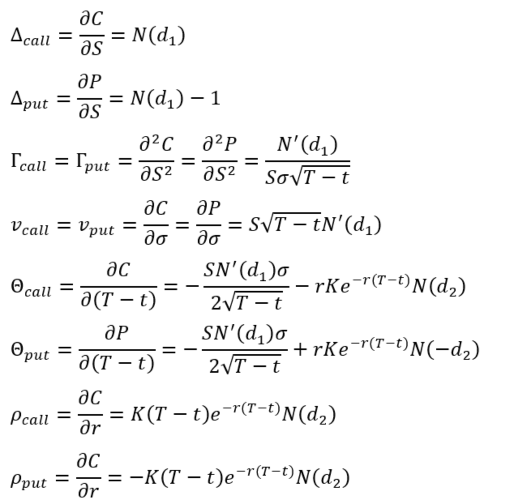

Chapter 19
옵션 그릭스
(The Greek Letters)
고객에서 옵션을 판매하는 금융기관은 고객의 옵션 권리행사에 대응하기 위해 옵션 리스크를 관리하게 됩니다.
가장 기본적으로 고객에게 옵션을 판매하고, 동일한 옵션을 거래소를 통해 즉시 매수하면 보유한 리스크는 완전 헷지됩니다.
그러나 거래소에서, 또는 장외에서도 판매한 옵션과 동일한 옵션을 매수할 수 없다면 어떨까요?
아마 헷지가 훨씬 어려워질 것 입니다. 이를 효율적으로 관리하기 위한 것이 옵션 그릭스(Greeks)입니다.
그릭스란 옵션이 가지고 있는 여러 위험을 다양한 관점에서 수치화한 것이며, 이를 통제가능한 범위에서 관리함으로써 위험을 효율적으로 관리할 수 있습니다.
이 장의 마지막에서는 “합성옵션”에 대해서도 살펴볼 것 입니다. 이는 옵션의 헷지와 그릭스와 매우 밀접한 관련이 있습니다.
19.1 Illustration
이제부터 옵션 그릭스 등 여러 개념을 설명할 때, 아래와 같은 예시를 반복적으로 사용할 예정입니다.
현재 금융기관은 고객에게 무배당 A주식 100,000주에 대한 유럽형 콜옵션을 $300,000에 매도하였습니다.
만기는 20주(0.3846년)이고, 현재 주가는 $49 및 행사가격은 $50입니다.
주가의 기대수익률은 13% 및 변동성은 20%이며, 무위험이자율은 5%입니다.
\[S_0=49,\;K=50,\;r=0.05,\;\sigma=0.2,\;T=0.3846,\;\mu=0.13\]
위 파라미터를 BSM에 적용하면 \(c=2.4\)이며, 옵션의 전체 가치는 $240,000입니다. 즉, 금융기관은 옵션의 공정가치 대비 $60,000의 마진을 붙여서 고객에게 매도한 것 입니다.
이제, 금융기관은 해당 옵션을 적절히 헷지해서 이익을 극대화할 필요가 있습니다.
19.2 Naked and Covered Positions
금융기관이 이러한 상황에서 취할 수 있는 가장 간단한 행동은 무엇일까요?
두 가지를 소개할텐데, 첫 번째는 아무것도 하지 않는 것 입니다.
즉, 매도한 옵션을 그대로 보유하는 것 입니다. (Naked position)
20주 후 주가의 향방에 따라 금융기관은 $300,000의 이익을 보게 될 수도, 주가의 상승에 따라 무한정 손실을 보게될 수도 있습니다.
주가가 $50 이하라면 옵션은 행사되지 않으며, 주가 상승에 따라 이익폭이 줄어들다가 $53이 되면 옵션매도금액과 권리행사로 인한 손실액이 동일해져 손익이 0이 됩니다.
두 번째 방법은, 주식을 10만주 매수해서 옵션의 권리행사에 대응하는 것 입니다. (Covered Position)
주식 10만주를 매수하고 10만주에 대한 콜옵션을 매도(커버드콜)하면 주가 상승으로 인해 옵션이 권리행사되더라도 보유한 주식에서 발생한 이익으로 상계가 가능합니다.
그러나, 이 경우 주가하락에 따른 손실위험이 있습니다. 주가가 $49보다 하락하면 손실이 발생하며, $46이 되면 주식의 손실분과 옵션매도금액이 동일해져 손익이 0이 됩니다.
두 방법은 어떤가요?
금융기관이 손쉽게 취할 수 있는 전략이지만, 헷지했다고 볼 수 없습니다. 옵션을 판매한 이익보다 더 큰 손실이 발생할 위험이 상존하기 때문입니다.
만약 위 두가지 전략을 동적(Dynamic)으로 번갈아가며 취하면 어떨까요?
주가가 행사가격 \(K\)보다 상승하면 즉시 주식을 매수하고, 주가가 \(K\)보다 하락하면 즉시 주식을 다시 파는겁니다.
이러한 전략을 스탑&로스 전략이라고 합니다.
만약 거래비용이 없고, 주가를 정확히 K에 사고 팔 수 있다면 완전헷지(Perfect hedge)가 가능하며,
투자자는 옵션 프리미엄만큼 무위험차익을 얻게 됩니다.
그러나 현실은 어떨까요?
현실에는 수수료나 세금 등 거래비용이 있고, 주가가 상승할 때 정확히 \(K\)에 사고 하락할 때 정확히 \(K\)에 팔 수 없습니다.
즉, 헷지비용이 발생하게 되고 주가가 \(K\)를 중심으로 자주 변동할 때 헷지비용이 커지게 됩니다.
따라서 현실적으로 스탑&로스 전략이 좋은 헷지성과를 내기는 어렵습니다.
19.3 Greek Letter Calculation
많은 트레이더들은 이러한 헷징의 한계를 극복하고 정교화하기 위해 그릭스(Greeks)를 활용합니다.
그릭스는 옵션의 위험을 기초자산, 변동성, 이자율 등 다양한 관점에서 평가하는 도구입니다.
따라서 각각의 그릭스는 옵션의 가격평가모델에 대하여 특정 위험에 대한 변화율로 계산하게 되며,
일반적으로 유럽형 옵션은 BSM 모형을, 미국형 옵션은 CRR 모형을 이용하여 계산하게 됩니다.
특정 시점에서 그릭스를 계산할 때 각각의 파라미터와 현재 옵션의 가격을 통해 산출한 내재변동성을 이용하게 되며,
이를 통해 다른 모든 조건이 동일할 때, 특정 위험요소에 대한 옵션가격의 민감도를 측정한다는 의미입니다.
이번 장에서는 유럽형 옵션의 BSM 모형을 이용한 그릭스 산출을 중점적으로 다루겠습니다.
19.4 Delta
델타(\(\Delta\))는 앞선 장에서도 설명한 개념입니다.
기초자산의 가격에 대한 옵션 가격의 민감도이며, \(\Delta\;=\;\frac{\partial c}{\partial S}\)입니다.
블랙숄즈모형에서 살펴보았던 것 처럼, 콜옵션에서 델타는 \(\Delta\;=\;N(d_1)\)으로 계산할 수 있습니다.
이와 유사하게 풋옵션에서 델타는 \(\Delta\;=\;N(d_1)-1\)이며, 음수로 나타나게 됩니다.
옵션의 델타는 Deep-ITM의 경우 1에 가깝고, Deep-OTM의 경우 0에 가깝습니다.
ATM의 경우 0.5에 가까운데, 옵션의 잔존만기가 길수록 약 0.6으로 수렴하는 경향이 있습니다.
BSM에서 옵션의 권리행사 확률은 수학적으로 \(N(d_2)\)로 나타나지만, \(N(d_1)\)과 큰 차이가 없는 점을 고려할 때,
이를 직관적으로 해석하면 ITM은 만기가 가까워질 수록 권리행사 확률이 1로, OTM은 0으로, ATM은 0.5로 수렴하는 것으로 이해할 수 있습니다.
Dynamic Delta Hedging
델타 헷징이란 포트폴리오의 델타를 0으로 만들어 기초자산의 가격변동에 따른 손익이 0이 되도록 만드는 방법입니다.
앞서 살펴본 예시에서, 금융기관의 전략으로서 델타헷징을 지속적으로 수행하는 방법을 소개하겠습니다.
10만주의 주식에 대한 콜옵션을 매도한 금융기관을 생각해봅시다.
해당 옵션의 델타를 산출해보면 옵션 매도시점에서 0.522가 나옵니다.
델타를 0으로 만들기 위해서는 금융기관이 주식을 52,200주만큼 매수하면 됩니다.
그리고, 이에 따라 옵션의 델타가 변화할 때 금융기관이 주식을 사거나 팔아서(리밸린싱) 델타를 0으로 유지하는 것 입니다.
스탑&로스 전략과 마찬가지로 거래비용 없이 정확한 가격에 주식을 사고 팔 수 있다면 이 전략은 유효할 것 입니다.
그러나, 실무적으로 거래비용과 스프레드비용이 발생하므로, 주가가 변하고 리밸런싱이 잦아질 수록 헤지비용이 발생하게 됩니다.
19.5 Theta
쎄타()는 잔존만기의 변화에 따른 옵션 가격의 변화분으로, 아래와 같이 표현됩니다.
\[\Theta(call)=-\frac{\partial c}{\partial T}=-\frac{S_0N'(d_1)\sigma}{2\sqrt{T}}-rKe^{-rT}N(d_2)\]
\[\Theta(put)=-\frac{\partial p}{\partial T}=-\frac{S_0N'(d_1)\sigma}{2\sqrt{T}}+rKe^{-rT}N(-d_2)\]
일반적으로 시간의 감소에 따른 옵션가격 변화분, 즉 Time decay를 측정하는 지표로 사용하기 때문에 (-)를 붙여서 표현하며,
결과값은 옵션의 시간가치 감소분을 표현하게 되므로 일반적으로 음수가 됩니다.
여기서 T는 연단위 잔존만기로, 1일 단위의 시간가치 변동분을 계산하기 위해서는 \(\Theta/252\) 등으로 나타낼 수 있습니다.
19.6 Gamma
앞서 델타 헷징을 설명할 때, 옵션의 델타가 지속적으로 변하기 때문에 리밸런싱이 지속적으로 필요하고, 이 때문에 헷지비용이 발생한다고 하였습니다.
이러한 옵션의 헷지비용을 어떻게 측정할 수 있을까요?
한가지 방법은 기초자산의 가격변동에 따른 옵션 델타의 변동분을 측정하여 예상되는 리밸런싱 규모를 측정하는 것 입니다.
여기에 이용하는 것이 감마()입니다.
\[\Gamma=\frac{\partial^2\Pi}{\partial S^2}=\frac{N'(d_1)}{S_0\sigma\sqrt{T}}\]
즉, 델타헷징을 통해 델타를 0으로 만든 Delta-neutral 포트폴리오에서, 감마가 매우 크다면 그 포트폴리오는 델타를 0으로 만들기 위해 해야하는 리밸런싱의 규모가 상대적으로 크다는 것을 의미합니다.
만약 포트폴리오의 Gamma를 0으로 만들어 Delta-neutral 및 Gamma-neutral을 만들 수 있다면, 짧은 시간동안 기초자산의 가격이 변하더라도 델타를 0으로 유지할 수 있고, 리밸런싱 없이 완전헷지를 지속할 수 있다는 것을 의미합니다.
19.7 Relationship between Delta, Theta, Gamma
Taylor expansion
먼저, 포트폴리오의 가치는 기초자산과 시간에 대한 함수 \(\Pi(S,T)\)로 나타낼 수 있다고 해보겠습니다.
테일러 전개를 적용하면 아래와 같이 표현할 수 있습니다.
\[\Delta\Pi=\frac{\partial\Pi}{\partial S}\Delta S+\frac{\partial\Pi}{\partial t}\Delta t+\frac{1}{2}\frac{\partial^2\Pi}{\partial S^2}\Delta S^2+\frac{1}{2}\frac{\partial^2\Pi}{\partial t^2}\Delta t^2+\dots\]
여기서 \(\Delta t^2\) 및 \(\Delta S^3\)부터는 무시할 정도로 미미하다고 가정하면,
\[\Delta\Pi=\frac{\partial\Pi}{\partial S}\Delta S+\frac{\partial\Pi}{\partial t}\Delta t+\frac{1}{2}\frac{\partial^2\Pi}{\partial S^2}\Delta S^2=(delta)\Delta S+\Theta\Delta t+\frac{1}{2}\Gamma\Delta S^2\]
만약 Delta-neutral 포트폴리오면, \(\Delta\Pi=\Theta\Delta t+\frac{1}{2}\Gamma\Delta S^2\)로 나타낼 수 있습니다.
BSM equation
해당 포트폴리오에 대한 블랙숄즈 미분방정식을 그릭스를 이용하여 표현하면 아래와 같이 정리할 수 있습니다.
\[r\Pi=\frac{\partial \Pi}{\partial t}+rS\frac{\partial\Pi}{\partial S}+\frac{1}{2}\sigma^2S^2\frac{\partial^2\Pi}{\partial S^2}=\Theta+rS\Delta+\frac{1}{2}\sigma^2 S^2\Gamma\]
만약 Delta-neutral 포트폴리오면, \(r\Pi=\Theta+\frac{1}{2}\sigma^2 S^2\Gamma\)
19.8 Vega
앞서 그릭스 산출에는 현재 옵션의 시장가격에 해당하는 내재변동성을 사용한다고 했습니다.
내재변동성은 옵션의 가격과 1-1로 매칭되는 매우 중요한 파라미터인데요, 베가는 이러한 내재변동성이 변할 때 옵션의 가격이 얼마나 변하는지 측정하는 지표입니다.
\[V=\frac{\partial f}{\partial\sigma}=S_0\sqrt{T}N'(d_1)\]
변동성과 옵션의 가격은 1-1 대응되며, 항상 양의 상관관계이기 때문에 베가의 값은 항상 양수입니다.
19.9 Rho
로는 옵션의 가격결정요인 중 마지막으로 남은 이자율과 옵션 가격에 대한 관계를 나타냅니다.
\[\rho(call)=\frac{\partial c}{\partial r}=KTe^{-rT}N(d_2)\]
\[\rho(put)=\frac{\partial p}{\partial r}=-KTe^{-rT}N(-d_2)\]
외환옵션의 경우, 이자율파라미터가 국내 및 해외 두가지입니다.
해외 이자율에 대한 rho는 아래와 같습니다.
\[\rho(call)=-Te^{-r_fT}S_0N(d_1)\]
\[\rho(put)=Te^{-r_fT}S_0N(-d_1)\]
Summary
